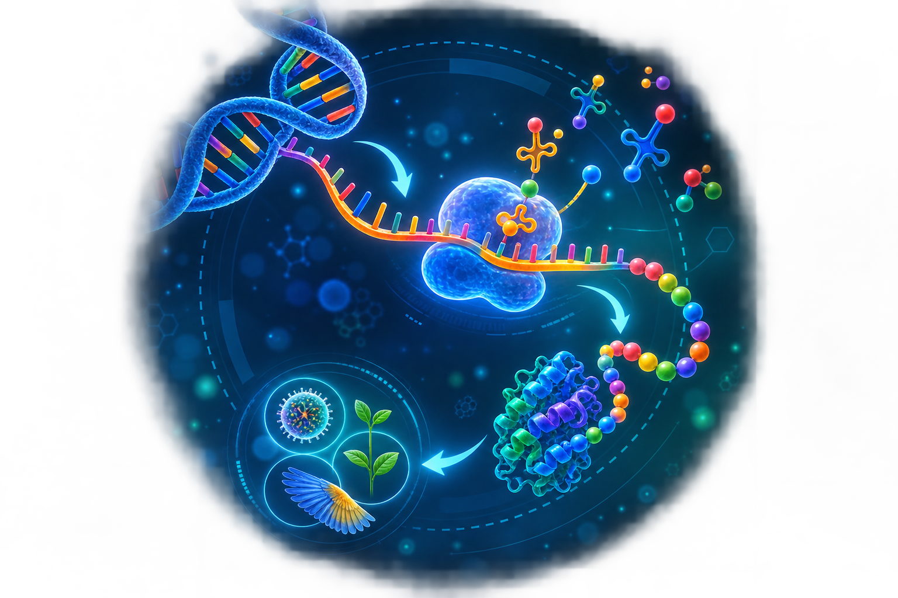

INNOVATIVE LEARNING MEDIA
CodonLab
ปฏิบัติการถอดรหัสสร้างชีวิต
สื่อการเรียนรู้ที่ช่วยให้นักเรียนเข้าใจกระบวนการ DNA → RNA → Amino Acid → Protein ผ่านการลงมือปฏิบัติจริงด้วยการถอดรหัส แปลรหัส และสร้างแบบจำลองโปรตีนอย่างสนุกและมีความหมาย

ABOUT CODONLAB
CodonLab คืออะไร?
CodonLab เป็นสื่อการเรียนรู้เชิงปฏิบัติการที่ออกแบบเพื่อช่วยให้นักเรียน เข้าใจกระบวนการถอดรหัสและแปลรหัสทางพันธุกรรมอย่างเป็นรูปธรรม โดยใช้ “สี รหัส ตัวอักษร และลูกปัด” เป็นตัวแทนของสารพันธุกรรมและกรดอะมิโน ทำให้นักเรียนได้เรียนรู้ผ่านการลงมือทำจริง คิด วิเคราะห์ และเชื่อมโยงความรู้ได้ชัดเจนยิ่งขึ้น
🎯 จุดประสงค์
- อธิบายโครงสร้างและหน้าที่ของ DNA และ RNA ได้
- เข้าใจกระบวนการ Transcription และ Translation
- แปลความหมายจาก Codon เป็น Amino Acid ได้
- สร้างแบบจำลองสาย Polypeptide ได้อย่างถูกต้อง
✨ จุดเด่นของสื่อ
- แปลงเนื้อหายากให้มองเห็นและจับต้องได้
- เน้น Active Learning และการร่วมมือกันทำงาน
- กระตุ้นการคิดวิเคราะห์และการแก้ปัญหา
- เชื่อมโยงความรู้ทางชีววิทยากับการสร้างชิ้นงานจริง
🧠 เหมาะกับใคร
- นักเรียนระดับชั้นมัธยมศึกษาตอนปลาย
- ครูชีววิทยาที่ต้องการสื่อแบบลงมือปฏิบัติ
- การนำเสนอนวัตกรรม / Best Practice / งานวิชาการ
- กิจกรรมห้องเรียนและนิทรรศการวิทยาศาสตร์
LEARNING KIT
อุปกรณ์ในชุดสื่อ CodonLab
อุปกรณ์ทุกชิ้นถูกออกแบบมาเพื่อเชื่อมโยงแนวคิดทางชีววิทยาให้เป็นประสบการณ์การเรียนรู้ที่เข้าใจง่าย สนุก และน่าจดจำ
ตารางรหัสสี
ใช้เชื่อมโยงสีในภาพ Pixel กับลำดับเบสของ DNA เพื่อเริ่มต้นกระบวนการถอดรหัส
ตารางรหัส DNA / mRNA
ใช้สำหรับถอดรหัสจาก DNA ไปเป็น mRNA อย่างเป็นขั้นตอน
ตาราง Codon
ช่วยให้นักเรียนแปลรหัส mRNA เป็นกรดอะมิโนได้อย่างถูกต้อง
ลูกปัดกรดอะมิโน
ใช้แทนกรดอะมิโนแต่ละชนิด เพื่อสร้างแบบจำลองสาย Polypeptide
เชือกร้อย
ใช้ร้อยลูกปัดเรียงตามลำดับกรดอะมิโนที่ได้จากการแปลรหัส
ใบกิจกรรม
บันทึกคำตอบ ขั้นตอน และผลการเรียนรู้ของนักเรียนในแต่ละกลุ่ม
ภาพ Pixel
ใช้เป็นโจทย์ตั้งต้นให้นักเรียนถอดรหัสจากสีไปสู่สารพันธุกรรม
ชุดสื่อประกอบ
ภาพตัวอย่าง ใบความรู้ และสื่อช่วยอธิบายหลักการพันธุศาสตร์เพิ่มเติม
HOW TO USE
วิธีการใช้งาน CodonLab
ขั้นตอนการเรียนรู้ถูกออกแบบให้เรียงลำดับจากง่ายไปยาก เพื่อให้นักเรียนเข้าใจภาพรวมของการสังเคราะห์โปรตีนอย่างเป็นระบบ
สังเกตภาพ Pixel
นักเรียนเริ่มจากการวิเคราะห์สีในภาพ Pixel และแยกตำแหน่งสีอย่างเป็นระบบ
ถอดรหัสสีเป็น DNA
นำข้อมูลสีมาเทียบกับตารางรหัสสี เพื่อแปลงเป็นลำดับเบสของ DNA
เปลี่ยน DNA เป็น mRNA
นักเรียนฝึกกระบวนการ Transcription โดยถอดรหัส DNA ไปเป็น mRNA
อ่าน Codon
แบ่งลำดับ mRNA เป็นชุดละ 3 เบส หรือ Codon เพื่อเตรียมแปลรหัส
แปลรหัสเป็นกรดอะมิโน
ใช้ตาราง Codon แปลความหมายจาก mRNA ไปเป็นลำดับกรดอะมิโน
ร้อยลูกปัดสร้าง Polypeptide
นำลำดับกรดอะมิโนที่ได้มาร้อยเป็นแบบจำลองสาย Polypeptide
อภิปรายและสรุปผล
นักเรียนร่วมกันวิเคราะห์ผล เปรียบเทียบลำดับโปรตีน และเชื่อมโยงกับแนวคิดเรื่อง Mutation
BIOLOGY CONCEPT
กระบวนการสังเคราะห์โปรตีน
CodonLab เชื่อมโยงแนวคิดสำคัญของชีววิทยาให้เห็นเป็นภาพและปฏิบัติได้จริง
ACTIVITY GALLERY
ภาพกิจกรรมการใช้สื่อ
ตัวอย่างภาพการจัดกิจกรรมจริงในชั้นเรียน สามารถเปลี่ยนรูปเหล่านี้เป็นภาพของคุณเองได้ทันที


LEARNING OUTCOMES
ผลที่เกิดจากการใช้สื่อ
CodonLab ไม่ได้เป็นเพียงสื่อที่สวยงาม แต่เป็นเครื่องมือที่ช่วยให้ผู้เรียนเข้าใจเนื้อหายากได้อย่างมีประสิทธิภาพ
เพิ่มความเข้าใจเชิงลึก
ผู้เรียนสามารถเชื่อมโยงความสัมพันธ์ของ DNA, RNA, Codon และโปรตีนได้ชัดเจนขึ้น
เกิดการเรียนรู้ผ่านการลงมือทำ
ผู้เรียนมีส่วนร่วมในการคิด วิเคราะห์ ถอดรหัส และสร้างแบบจำลองด้วยตนเอง
พัฒนาทักษะกระบวนการทางวิทยาศาสตร์
ช่วยฝึกการสังเกต การตีความข้อมูล การแก้ปัญหา และการอภิปรายร่วมกัน
“CodonLab ทำให้เรื่องการสังเคราะห์โปรตีนที่เคยมองว่ายาก กลายเป็นกิจกรรมที่นักเรียนเข้าใจได้ สนุก และอยากเรียนรู้ต่อ”
พร้อมนำเสนอ CodonLab อย่างมืออาชีพแล้วหรือยัง?
เว็บไซต์นี้สามารถนำไปใช้เป็นหน้าแสดงผลงานนวัตกรรม สื่อการเรียนรู้ หรือประกอบการนำเสนอในงานวิชาการได้ทันที
กลับขึ้นด้านบน